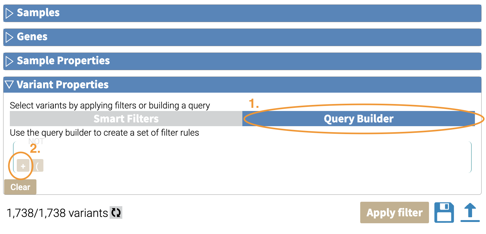
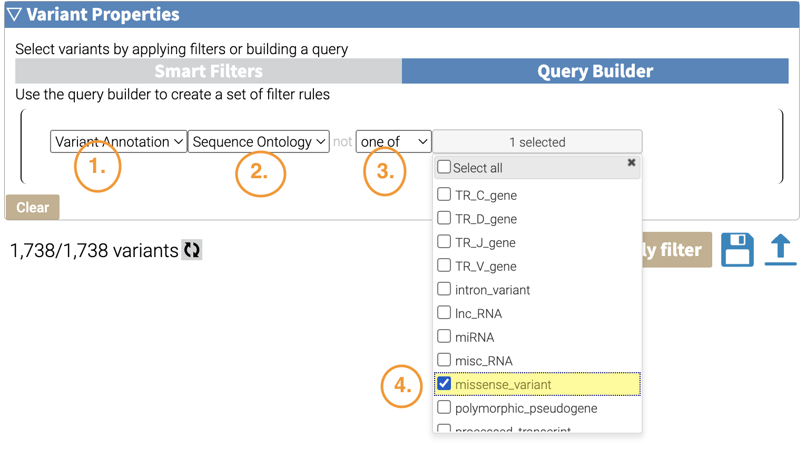
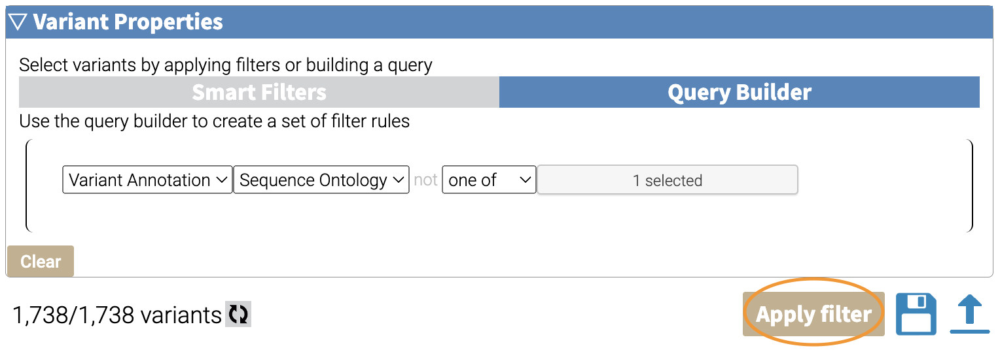
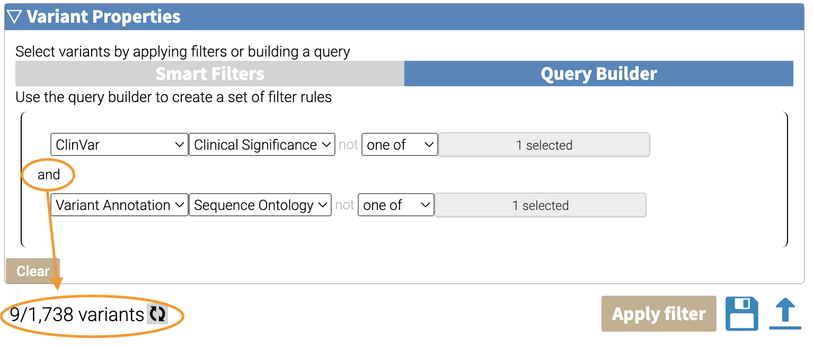
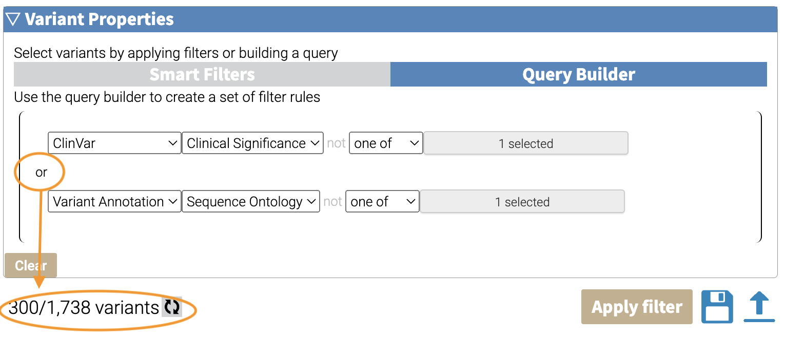
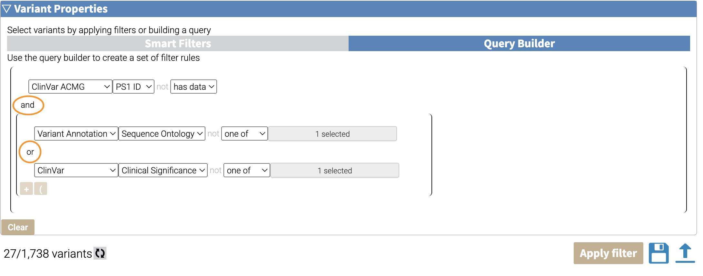

flowchart TD A["Results Viewer"] --> B B["Build Filter in GUI"] B --> F["Explore Filtered Data"] F --> G["Save JSON filter"] G --> D["Apply filter to New Set"] G --> E["Apply Filter on CLI"]
Filtering
Why Filter?
Filtering your annotated variants lets you query interesting subsets of your variants.
A secondary purpose of filtering is when you want to view your results in the results viewer and you have more than 100K variants.
Filtering Roadmap
Filtering in the GUI
Once you have your annotated results, you can filter variants in the results viewer. There are 4 kinds of filters:
- Samples
- Genes
- Sample Properties
- Variant Properties
We will go through each of these filters and their functionality.
Samples
You can remove variants associated with a set of sample IDs by unselecting them in the checkboxes here.
graph TD A["All Variants\n(n=1,738)"] --"Sample:mother"--> B B["Mother Variants\n(n=385)"]
For example, we can filter for
Genes
Gene-level filtering can be done here. You can input a list of genes, separated by line-breaks
graph TD A["All Variants\n(n=1,738)"] --"Gene:(BRCA1,BRCA2)"--> B B["BRCA1/BRCA2 Genes\n(n=63)"]
Sample Properties
Variant Properties
In variant properties, you can filter by variant type based on your annotations. For example, let’s filter to missense variants.
Under Variant Filter:
- Click on “Query Builder”.
- Mouse into the left bottom corner of the query builder window, and click the “+” sign.

Make your filter by selecting the following dropdown boxes:
- Variant Annotation
- Sequence Ontology
- One of
- Missense checkbox
 Finally, click the “Apply Filter” Button:

You will be left with 299 variants. Here’s a visual summary of what we did:
graph TD A["All Variants\n(n=1,738)"] --"Sequence Ontology:\nMissense"--> B["Missense Variants\n(n=299)"]
Boolean Operations
You can build more sophisticated operations by combining each filter step using Boolean logic.
AND logic
By default, the filters are combined using AND logic, which are more restrictive, because they require variants to meet both filters.
Here’s an example of using AND logic. Here we are combining two filters: Missense Variants (from Variant Annotation –> Sequence Ontology) and Pathogenic variants (from ClinVar –> Clinical Significance).
 When we apply the filter, we get 9 variants that meet both criteria. Here’s a visual summary of the filtering:
graph TD A["All Variants\n(n=1,738)"] --"Sequence Ontology:\nmissense"--> B["Missense Variants\(n=299)"] A --"Clinical Significance:\nPathogenic"--> C["Pathogenic Variants\n(n=10)"] B --"AND"--> E["Pathogenic AND Missense\n(n=9)"] C --"AND"--> E
OR Logic
These filters can also be combined using OR logic, which is more permissive (that is, these filters will return a greater number than the AND logic) we might want variants that are either missense OR pathogenic.
We can do this by clicking the “and” that links our two filters, which will switch it to an “or”:
 When we apply the filter, we get 300 variants. The breakdown is below.
graph TD A["All Variants\n(n=1,738)"] --"Sequence Ontology:\nmissense"--> B["Missense Variants\n(n=299)"] A --"Clinical Significance:\nPathogenic"--> C["Pathogenic Variants\n(n=10)"] B --"OR"--> E["Pathogenic OR Missense\n(n=300)"] C --"OR"--> E
Combining AND / OR logic
By default, when you click the “and” / “or” of one set of filters, all filters will be changed. If you want to combine AND / OR logic, you can group one of the logic operations using parentheses.
For example, say we want the above OR subset combined as an AND with those variants that have PS1 evidence. We can
This is what our final filter looks like:
 Here’s a visual breakdown of this complex filter:
graph TD A["All Variants\n(n=1,738)"]--"Sequence Ontology:\nmissense"--> B A --"Clinical Significance:\nPathogenic"--> C subgraph OR B["Missense Variants\n(n=299)"] C["Pathogenic Variants\n(n=10)"] B --"OR"--> E["Pathogenic OR Missense\n(n=300)"] C --"OR"--> E end subgraph PS1 F["PS1 Variants\n(n=27)"] end E --"AND"--> G["PS1 Variants AND\n(Missense OR Pathogenic)\n(n=27)"] A --"ClinVar ACMG\nPS1 variants"--> F F --"AND"--> G
NOT Logic
Deleting a Filter
Case Study: Filtering Pathogenic Variants
graph TD A["All Variants\n(n=1,738)"] --"PS1 ID\nhas data"--> B B["PS1 variants\n(n=36)"]
Exporting Filters as JSON
Filters can be exported and saved as JSON files for further reuse. They can be applied to a new set of variants in the GUI, or can be applied to result SQLite files on the command line.
Applying JSON filters in the GUI
Applying JSON filters on the command line
JSON filters can also be applied on the command-line using the oc util filtersqlite command. More information is here.